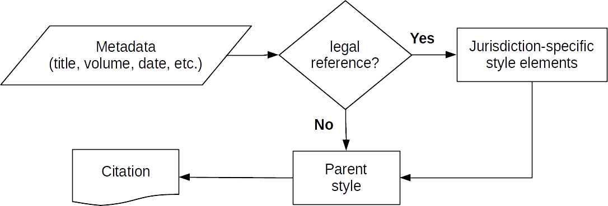
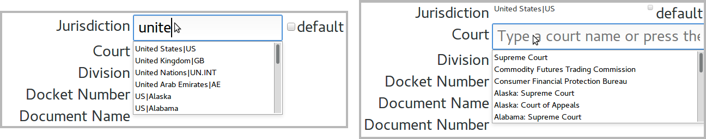
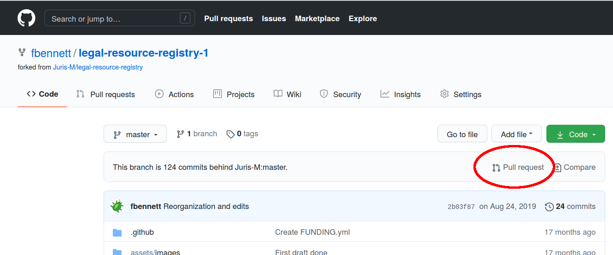

Jurism Tech: The Legal Resource Registry
Jurism Tech: The Legal Resource Registry
This is the first of a series of posts describing the architecture behind Jurism’s features. These will serve as an aide-mémoire for myself, as documentation for interested users, and as a reference for developers, librarians, and others contributing to the Jurism ecosystem. This installment covers the Legal Resource Registry (LRR), which is at the core of Jurism’s support for law. If you want to know how Jurism produces legal citations, this is a good place to start.
🔗 Jurisdiction identifiers
There is an important difference between the general principles of citation in any comprehensive style guide, and the rules of citation for legal materials. The former describe patterns of citation to be applied to all materials of a particular type. The patterns themselves may vary. Consider how a journal article would appear in a bibliography formatted in three common styles:
-
Chicago (note style)
Gilmore, Grant. “Law, Logic and Experience.” Howard Law Journal 3 (1957): 26–41. -
APA
Gilmore, G. (1957). Law, Logic and Experience. Howard Law Journal, 3, 26–41. -
Bluebook
Grant Gilmore, Law, Logic and Experience, 3 Howard L.J. 26 (1957).
In contrast, legal citations for a given jurisdiction will be roughly uniform across all “parent” styles, but there is variation among jurisdictions. For example, consider the following citations to court judgments, all of which would be correct in any of the three styles above:
-
United States (Supreme Court)
International Shoe Co. v. Washington, 326 U.S. 310 (1945). -
United Kingdom (House of Lords)
Donoghue v. Stevenson, [1932] A.C. 562 (HL). -
Germany (Bundesgerichtshof)
BGH IV ZR 241/18.
To cope with the confluence of format-by-style and format-by-jurisdiction requirements, the “JM” styles in Jurism render legal items by first calling a jurisdiction-specific style module to obtain a set of “building-block” citation elements, and then assembling them with markup and punctuation appropriate to the parent style.[1] In broad outline, the workflow looks like this:

This scheme is made possible by a Jurisdiction field set on each legal item. Jurism uses a machine-readable identifier set in this field (discussed below) to select a style module appropriate to the item.
One critical role of the LRR is to supply these essential jurisdiction identifiers, and a human-readable name for each.
🔗 Court abbreviations
In citations to U.S. law, court abbreviations come in two flavors. One is the form used to indicate the court when citing to a multi-jurisdictional reporter. The abbreviated name in this case is an amalgam that to the educated eye expresses both the court and its jurisdiction:
- Lafond v. Sweeney, 343 P.3d 939 (Colo. 2015).
- Begley v. Ireson, 399 P.3d 777 (Colo. Ct. App. 2017).
- Pielet v. Pielet, 978 N.E.2d 1000 (Ill. 2012).
- McCarthy v. Pointer, 3 N.E.3d 852 (Ill. App. Ct. 2014).
- Fallini v. Hodel, 725 F. Supp. 1113 (D. Nev. 1989).
- In Re Moore, 290 B.R. 287 (Bankr. E.D.N.C. 2003).
- Edwards v. Ayers, 542 F.3d 759 (9th Cir. 2008).
The second possible form is that used in a dozen or so U.S. jurisdictions to indicate the court in a “vendor-neutral” citation form:
- Lafond v. Sweeney, 2015 CO 3.
- Begley v. Ireson, 2017 COA 3.
- Pielet v. Pielet, 2012 IL 112064.
- McCarthy v. Pointer, 2013 IL App (1st) 121688.
To generate these various abbreviations, Jurism sets a machine-readable code in the Court field, which is used together with the jurisdiction code to look up the correct abbreviation for a given citation.
A second critical role of the LRR is to supply a label and a machine-readable identifier for each court type and, for each jurisdiction having a court of that type, to provide up to two abbreviations for it in that context.
🔗 Reporters and abbreviations
To keep citations compact and clear, citation styles call for abbreviations to be partially or completely suppressed in some contexts, to avoid repetition. If a reporter is entirely dedicated to decisions of a particular court, the court abbreviation is omitted entirely in the parenthetical below:
- Gedra v. Dallmer Co., 153 Ohio St. 258 (1950).
If a reporter covers decisions of multiple courts in a parent jurisdiction, the court type is indicated, but specific reference to the parent jurisdiction is omitted:
- Kashian v. Harriman, 120 Cal. Rptr. 2d 576 (Ct. App. 2002).
In one unusual case (Ohio), the core portion of a vendor-neutral citation form conveys only the state-level jurisdiction. In this case as well, reference to the parent jurisdiction is omitted:
- Lanzer v. Louisville, 2016-Ohio-8071 (11th Dist.).
Finally, it can happen that certain reporters, because of their form of publication, require a distinctive citation format. For example, compare the following two formats for citations to a decision of the German Federal Administrative Court:
Ordinary citation
- BVerwG, NVwZ 1999, 296
| BVerwG | Court name (Bundesverwaltungsgericht) |
| NVwZ | Journal name (Neue Zeitschrift für Verwaltungsrecht |
| 1999 | Year of report |
| 296 | Page |
Specially formatted citation
- BVerwG, Beschl. v. 9.1.1999 – Buchholz 310 § 65 VwGO Nr. 131, S. 2.
| BVerwG | Court name (Bundesverwaltungsgericht) |
| Beschl. | Disposition type (Beschluss = judgment) |
| v. 9.1.1999 | Date of disposition |
| Bucholz | Reporter name (Buchholz, und Nachschlagewerk der Rechtsprechung des Bundesverwaltungsgerichts = Bucholz, “A Reference Work on the Case Law of the Federal Administrative Court”) |
| section 310 | Section within the reporter |
| § 65 VwGO | Paragraph and statute applied (Verwaltungsgerichtsordnung = Administrative Code) |
| decision no. 131 | Number of decision within Bucholz (not unique) |
| S. 2 | Page |
The role of the LRR in addressing the requirements described in this section is to provide hints for the full or partial suppression of certain portions court abbreviations, and for application of alternative formatting, depending on the core element of a citation (whether that be a reporter name or a vendor-neutral abbreviation).
🔗 Identifier formats
The structure of Jurism jurisdiction and court identifiers loosely follows one portion of the draft URN:LEX specification submitted to the IETF by Spinosa, Francesconi, and Lupo.[2] An instance of a court or other body is identified by two elements: a “jurisdiction;” and a “court.” When the two are combined for processing, they are joined with a semicolon:
<jurisdiction identifier>;<court identifier>
Jurisdiction identifiers (more accurately “domain identifiers”) consist of one or more elements, each composed of lowercase roman letters and periods, joined by a colon delimiter (no other characters are permitted). An identifier with two or more elements expresses a nested set of domains, with the leftmost being the largest and the rightmost the smallest. The relationship between parent and child domains is otherwise indeterminate. It may be one of procedural hierarchy …
us |
United States | US |
us:c9 |
US | Ninth Federal Appellate Circuit |
us:c9:ca.cd |
US | Ninth Federal Appellate Circuit | Central District of California |
… or a child domain may simply be a container of convenience to group together courts and other entities that are under the parent’s jurisdiction …
us |
United States | US |
us:fed |
US | Various federal courts and tribunals |
Court identifiers represent a court of a particular type, such as “District Court” or “Court of Appeals,” which may be associated with multiple jurisdictions. The identifier is composed of roman characters and periods. There are no particular rules for composition of the court identifier, other than that it must be unique to a given body within a given top-level domain. For example:
sc |
Supreme Court |
district.court |
District Court |
Where a court has divisions that are included in citations, the
court identifier can be extended by an additional element separated
by a tilde (~):
ecj~chamber.1 |
European Court of Justice, First Chamber |
cass~civ.1 |
Cour de cassassion 1re chambre civil |
The primary purpose of the LRR is to support the organization and citation of materials. A jurisdiction identifier is not intended as a firm statement about procedure or institutional structure. Extended identifiers for court divisions are included only if relevant to citation requirements.
🔗 LRR source files
The Legal Resource Registry supports two specific features of a larger system: the orderly selection of jurisdictions and courts in the Jurism user interface; and the correct application of abbreviations in automatically generated citations. The first is readily apparent when the down-arrow is pressed or text is typed into the Jurisdiction and Court fields of the Jurism client:

The second role of the LRR is to supply court-in-context abbreviations for legal citations in the various forms illustrated under Court abbreviations above.
Filename
Each top-level jurisdiction supported by Jurism is represented by a single source file, named for the domain that it covers. Domains are either the two-character ISO code of a country, or a string (composed of roman letters and periods) identifying an international organization.
- juris-
<domain>-desc.json
Context
The content of the source file is “exported” to a set of intermediate source files used to build the Jurism client. As context for the comments below, please note the following:
- Citations are generated from a set of CSL-M variables;
- Jurism abbreviates variables depending their abbreviation category (the table below lists the categories and their respective variables);
- The name of the Reporter field in the citation processor is
container-title; - The name of the Court field in the citation processor is
authority; - In the LRR, court abbreviations set with the
abbrevkey are set on theinstitution-partcategory; and - Court abbreviations set with the
ABBREVSkey are set on theinstitution-entirecategory.
| Abbreviation category | CSL-M variables or category description |
|---|---|
classic |
abbrevs apply to items of the classic type. The value must be set by the user in the Jurism Abbrevs Filter to take effect. |
collection-title |
collection-title |
container-title |
container-title, archive |
hereinafter |
available on any item for which a hereinafter form is called by the processor. The value must be set by the user in the Jurism Abbrevs Filter to take effect. |
institution-entire |
publisher, and institutional creator names (including the authority variable) called with the attribute form="short" |
institution-part |
publisher, and institutional creator names (including the authority variable) called with the attribute institution-parts="short" |
nickname |
intended for the narrow use case of replacing a single individual’s name with a phrase such as “the author” in citations to correspondence and the like. The value must be set by the user in the Jurism Abbrevs Filter to take effect. |
number |
number, call-number, chapter-number, collection-number, edition, page, issue, locator, locator-extra, number-of-pages, number-of-volumes, volume, citation-number (For these numeric variables, abbreviation is only enabled—or should only be enabled—if the variable content is non-numeric.) |
place |
country, place, archive-place, publisher-place, event-place, jurisdiction, language-name, language-name-original |
title |
title, title-short, genre, event, medium |
File content
Lines 2, 8 & 32: There are three top-level keys in an LRR source file:
langs;courts: andjurisdictions. Thelangsobject specifies which alternative languages should be included in the output of the LRR export script. If the object is empty, only the default values will be output. The full text of this sample can be found in Appendix 1: Sample LRR source file.
{
"langs": {
Lines 3-6: If alternative languages are to be generated for abbreviations (see Abbreviations above) or the client UI (see User Interface Maps above), their ISO language codes are set as keys in the
langsobject, with an array specifying the desired output targets.
"fr": [
"ui",
"abbrevs"
]
},
Lines 8-31: The
courtsobject sets the identifier codes of the courts within this jurisdiction, and their abbreviation equivalents.
"courts": {
Lines 9-18: This entry for the
cacourt illustrates the basic syntax of mappings and variants.
"ca": {
Lines 10-12: Entries have up to three mappings:
nameis the human-readable name of the court, shown in the Jurism user interface.abbrevis the abbreviation set for this court ininstitution-partentries of the abbreviation file(s) generated from this source. The%splaceholder will be replaced with the name or abbreviation of the jurisdiction(s) associated with this court.ABBREVis the identifier set for this court ininstitution-entireentries of the abbreviations file(s) generated from this source, again with a%splaceholder for the jurisdiction name or abbreviation.
"name": "Court of Appeal",
"abbrev": "%s Ct. App.",
"ABBREV": "%sCA"
Lines 13-17: Entries can have a
variantsobject, with keys matching language codes set inlangsabove. Mappings set for a variant override the default values for the target language domain. In this case, Cour d’appel will replace the default name Court of Appeal when French is set as the preferred language of the Jurism user interface. Abbreviation output is unaffected by this entry: the default values above will be used for both English and French citation output.
"variants": {
"fr": {
"name": "Cour d'appel"
}
}
},
Lines 19-30: This entry for the
sccourt illustrates a variant override ofabbrevandABBREVvalues in addition toname.
"sc": {
"name": "Supreme Court",
"abbrev": "Sup. Ct.",
"ABBREV": "SC",
"variants": {
"fr": {
"name": "Cour suprême",
"abbrev": "Cour sup.",
"ABBREV": "CS"
}
}
}
},
Line 32-67: The
jurisdictionsobject sets the user-interface names and abbreviations for each jurisdiction, and specifies which courts are associated with it.
"jurisdictions": {
Lines 33 & 34-41: Like courts, jurisdictions have a
namevalue, optionally values forabbrevandABBREV, and possibly avariantsobject. Note that in the sample below, although Laputa has anABBREVvalue for its courts, there is no value forABBREVin this jurisdiction entry. This is normally the case for a top-level jurisdiction: theABBREVfor top-level court names will not ordinarily contain a%splaceholder, so there is no need.
"zz": {
"name": "Laputa",
"abbrev": "Lap.",
"variants": {
"fr": {
"name": "Láputa",
"abbrev": "Láp."
}
},
Lines 42-44: Courts are associated with a jurisdiction by setting the court code as key in the jurisdiction’s
courtsobject. In the simplest (and most common) case, the value set on the key is an empty object. This will associate all of the values of thesccourt configured above with this context, including its multilingual variants.
"courts": {
"sc": {}
},
Lines 45-47: Abbreviations in the container-title category are applied to journal names. In an ordinary entry, the mapping is simply from the variable content (as key) to the abbreviation (as value). The entry at line 20 prepends a formatting statement to suppress the
authorityvariable, which holds the court name or code in data received by the citation processor. Although it will rarely, if ever, be required, multiple variables can be suppressed by setting them as a comma-delimited list. The syntax of the suppression statement is therefore:
- !
<variable>[,<variable>]>>>This statement will suppress the court name (or its abbreviation) in any citation to the Laputa Reports journal. This is appropriate if Laputa Reports carries only Supreme Court judgments, so …
- Jones v. Smith, 12 All Lap. 34 (Sup. Ct. 1999).
… but …
- Noakes v. Stoakes, 56 Lap. Rep. 78 (2000).
"container-title": {
"Laputa Reports": "!authority>>>Lap. Rep."
}
},
Line 49: The
cacourt set on this child jurisdiction contains a%splaceholder in itsabbrevand in itsABBREVvalues, which will be replaced with the corresponding values set here on thezz:atljurisdiction. This may be overridden—see the note to lines 53–61 below.
"zz:atl": {
"name": "Atlantis",
"abbrev": "Atl.",
"ABBREV": "ATL",
Lines 53-61: This illustrates a pattern that may be required to address special language requirements. In this case, the adjectival form of the noun “Atlantis” is required, so substitution will not suffice. The big-hammer solution is to specify the entire value of
abbrevfor the court, as we do here for French output only.
"courts": {
"ca": {
"variants": {
"fr": {
"abbrev": "Cour d'app. Atlantienne"
}
}
}
},
Line 63: This entry illustrates partial suppression of a court name. The syntax is the same that for full suppression, but with a string set off from the variable name with a colon:
- !
<variable>[:<string>][,<variable>[:<string>]]>>>The effect of this statement will be to remove “Atl.” from the
authorityvariable when it is rendered in the cite. This is appropriate if Atlantis Decisions covers multiple courts within the Atlantis jurisdiction: the jurisdiction hint in the abbreviated court name will be removed, and only the court name itself, if any, will remain. So …
- Anderson v. Biggles, 12 All Lap. 34 (Atl. Ct. App. 1999).
… but …
- Comstock v. Drub, 56 Atl. Dec. 78 (Ct. App. 2000).
"container-title": {
"Atlantis Decisions": "!authority:Atl.>>>Atl. Dec.",
Line 64: A hash mark followed by a number as a formatting statement sets the number as the value of a
cite-formvariable in the citation processor. The variable can be tested in CSL-M style code to apply custom formatting for cites to this particular journal.
"Poseidon Service": "#1>>>Poseidon Serv."
}
}
}
}
🔗 jurisupdate: the LRR export script
Source files in the Legal Resource Registry must be exported for digestion by the Jurism client. The client is distributed with a ready-to-run set of jurisdiction files bundled in. These can be modified by fetching a copy of the LRR, editing the LRR source files, and running the LRR export script. This section explains how to do that.
🔗 Setting up
The first step in setting up is to fork the LRR project to your own GitHub account, by visiting the LRR project page and clicking on the Fork button:

After forking the project, fetch your project address from your own project page to the clipboard:

Use git with the project address to clone the project to a location of your choice:
shell> git clone https://github.com/XXXXXXX/legal-resource-registry.git
Set the original “upstream” LRR project as a remote partner to your clone. (This makes is possible to keep your clone current with any upstream changes):
shell> git remote add upstream https://github.com/Juris-M/legal-resource-registry.git
For good measure, issue the command to pull in upstream changes. You should issue this command each time you begin work in the clone, to be sure the upstream project has not changed in the meantime:
shell> git pull upstream master
Enter the scripts subdirectory of the project folder, install dependencies, and link the maintenance script (jurisupdate) to your command environment:
shell> cd legal-resource-registry/scripts
shell> npm install
shell> npm link
At this point, running the jurisupdate command should yield the following error:
shell> jurisupdate
ERROR: path.jurisSrcDir is undefined in /PATH/TO/HOME/DIRECTORY/.jurisUpdate
The final step in setup is to set several path names in the .jurisUpdate configuration
file shown in the error message, using a text editor. The file content will initially look
like this, with null values for the paths:
{
"path": {
"jurisSrcDir": null,
"jurisMapDir": null,
"jurisAbbrevsDir": null
}
}
The paths should be set as follows:
jurisSrcDir
- Set
jurisSrcDirto the path of thesrcsubdirectory of your cloned copy of the LRR.
jurisMapDir and jurisAbbrevsDir
- Set these paths to the directories to which Jurism map and abbreviation files should be written by the
jurisupdateexport script. In most cases, these will be thejuris-mapsandjuris-abbrevssubdirectories of the Jurism data directory, which you can confirm in the client via Preferences → Advanced → Files & Folders. (Developers building the Jurism client code from scratch may wish to set these to the respective directories of the client source.)
With these adjustments in place, the jurisupdate command should return the following
error message:
shell> jurisupdate
ERROR: One of -a or -j is required.
If that all checks out, setup is complete and you’re ready to go.
🔗 Commands
Running the jurisupdate command with the -h option will show its help text:
shell> jurisupdate -h
Usage: index.js <options>
-a, --all
Perform requested operation on all jurisdictions.
-j <jurisdictionID>, --jurisdiction=<jurisdictionID>
Perform requested operation on the specified jurisdiction.
-c, --convert
Convert from old descriptive format to new descriptive format
-l, --list
List codes for all international organizations and countries [with their languages]
-F --force
Force overwrite of same data for descriptive-to-compact.
To make changes to the Jurism identifier system, you will edit source files in the LRR, and run the following command to make your changes available when the Jurism client is (re)started:
shell> jurisupdate -a
Alternatively, you can limit an update to a particular jurisdiction by setting its code with the -j option:
shell> jurisupdate -j vn
🔗 Coordination
If you do edit the LRR for local use, be sure to submit your changes to the main project, so they can be folded into a future release. First commit the changes to your LRR fork:
shell> git commit -m "Changes to abbreviations for ZZ (Laputa)" -a
shell> git push
Then file a pull request against your fork on GitHub:

🔗 Jurism output files and formats
The primary purpose of the Legal Resource Registry is to support the storage and citation of legal materials in the Jurism reference manager: it is part of that program’s source code. National jurisdictions and international organizations covered by the system are each represented by a single source file containing its identifiers and abbreviations, in a format that lends itself to manual editing. The LRR source files are then “exported” to produce two intermediate source files, which are used in the actual Jurism build: auto-abbreviation files; and user interface maps. The format of these two targets is documented in this section.
🔗 Abbreviations
Filename
The LRR export script sets abbreviations for use in generating citations in files named according to the following template:
-
auto-
<domain>[-<variant>].json -
The domain is a two-character ISO country code (i.e.
us,jp, etc.), or an ad hoc identifier for an international body (i.e.eu.int,un.int,coe.int). -
The optional variant element is an arbitrary name, which can be used to call the variant from a CSL style.
-
Each supported jurisdiction must have a bare abbreviation file with no variant name. Multiple variants of a given jurisdiction are permitted.
File content
The file content itself is in JSON format. The annotated sample file below, shows the English-version output of the LRR source file annotated in LRR source files above. For the French-version output, see Appendix 2: Sample abbreviation file below.
There is quite a lot to digest here, and we will take it by numbers.
Lines 2-4: Three fields declare the
filename, thenameof the jurisdiction, and theversionexpressed as an ISO timestamp.[3]
{
"filename": "auto-zz.json",
"name": "Atlantis",
"version": "2019-08-19 12:16:29 UTC",
Lines 5-35: The Jurism abbreviation data is contained in the
xdataobject.
"xdata": {
Line 6: Each legal item in Jurism is assigned a
jurisdictionvalue. Abbreviations are defined in the context of a specific jurisdiction, and the processor searches for a match within the item jurisdiction or, failing that, in each successive parent jurisdiction until a match is found. The ultimate fallback is thedefault“jurisdiction” (which is also tried for a match if the item has no jurisdiction value at all).
"default": {
Lines 7-10: Jurisdiction keys are uppercased in the
placeobject, mapped to the name or abbreviation of the jurisdiction.
"place": {
"ZZ": "Lap.",
"ZZ:ATL": "Atl."
}
},
Lines 12-22: The
zzkey is the top-level jurisdiction code of Laputa. All other jurisdiction keys in this file (apart fromdefaultabove) are children of this domain.
"zz": {
Lines 13-15 & 16-18: The citation processor can abbreviate an institution (such as a court) in two separate ways:
institution-partprovides the descriptive abbreviation of courts in their jurisdictional context. Examples in US legal citation practice would be “S.D.N.Y” (for the Federal District Court for the Southern District of New York) and “Bankr. D. Mass.” (for the Bankruptcy Court in the Federal District of Massachussetts).
institution-entireprovides a code identifying the court, for the vendor-neutral citation forms used in some jurisdictions. Examples in US citation practice would be “CO” (for the Colorado Supreme Court) and “COA” (for the Colorado Court of Appeals).
"institution-part": {
"sc": "Sup. Ct."
},
"institution-entire": {
"sc": "SC"
},
Lines 19-21: The
container-titleobject set on this jurisdiction in the LRR is passed through verbatim in the exported abbreviation file.
"container-title": {
"Laputa Reports": "!authority>>>Lap. Rep."
}
},
Lines 23-33: The key
zz:atlis a subjurisdiction ofzz. Theinstitution-partandinstitution-entireabbreviation sets have the roles described above.
"zz:atl": {
"institution-part": {
"ca": "Atl. Ct. App."
},
"institution-entire": {
"ca": "ALTCA"
},
Lines 30-33: Again,
container-titleobjects set on a jurisdiction in the LRR are passed through verbatim in this exported abbreviation file.
"container-title": {
"Atlantis Decisions": "!authority:Atl.>>>Atl. Dec.",
"Poseidon Service": "#1>>>Poseidon Serv."
}
}
}
}
In the Jurism client, the abbreviation source files are used to populate a database in the Abbrevs Filter plugin with abbreviations appropriate to a particular style. The database format, the Abbrevs Filter, and its interface to the citation processor are beyond the scope of this overview.
🔗 User Interface Maps
Filename
Jurisdiction and court codes are not exposed directly in the Jurism user interface: a human-readable equivalent is displayed instead. In the Jurism source code, the data to produce maps for converting between the two are stored in files named for the domain to which each applies:
- juris-
<domain>-map.json
A sample of such a file, illustrating a jurisdiction with multiple languages, is shown below. The file format is quite compact to minimize the bulk of data shipped with the Jurism client. There is again a lot to unpack, and we will once more take it by line numbers. The full text of this sample can be found in Appendix 3: Sample user interface map file.
File content
Lines 2 & 20: There are two keys in a Jurism UI map file, the first of which is
courts.
{
"courts": [
Lines 3-18: Each entry in the
courtsarray is an array of two values: a court code; and the human-readable name of the court. Code/name pairs are set here for every court type (two in this case) and every language (again two in this case) that are configured for the jurisdiction covered by the file.
[
"ca",
"Court of Appeal"
],
[
"ca",
"Cour d'appel"
],
[
"sc",
"Supreme Court"
],
[
"sc",
"Cour suprême"
]
],
Line 20: The second top-level key in a Jurism UI map file is
jurisdictions, the companion to thecourtsobject above.
"jurisdictions": {
Lines 21-34 & 35-48: The value of the
jurisdictionskey is an object with at least onedefaultkey, and optionally keys for additional languages. This file provides one additional language (fr, the ISO code for French) as an alternative to the default.
"default": [
Lines 22-27: Each entry in the
defaultarray and its alternate-language siblings is an array with three or more elements:
- The machine-readable element for the entry’s jurisdiction
- The human-readable name of the entry’s jurisdiction;
- The index of this entry’s parent, or null if there is no parent; and
- Any remaining arguments are zero-origin indices of the
courtsarray, specifying which courts are associated with this specific jurisdiction.The root entry is always placed in first position, with a third-position value of
null.
[
"zz",
"Laputa",
null,
2
],
Lines 28-33: Child jurisdictions always have an integer value in third position. This
atljurisdiction is an immediate child of the root jurisdictionzz, and so has a third-position value of0. The Jurism jurisdiction code generated from this entry will bezz:atl.
[
"atl",
"Atlantis",
0,
0
]
],
Lines 35-48: The
frobject in this sample follows the same pattern as thedefaultobject described above, except for setting the trailingcourtindices to the French versions of court names.
"fr": [
[
"zz",
"Láputa",
null,
3
],
[
"atl",
"Atlantis",
0,
1
]
]
}
}
Jurism user interface maps are source code for building a database to drive pulldown menus in the Jurisdiction and Court fields. The map files described here are automatically generated by the LRR export script, and should not be edited directly.
🔗 Appendix 1: Sample LRR source file
{
"langs": {
"fr": [
"ui",
"abbrevs"
]
},
"courts": {
"ca": {
"name": "Court of Appeal",
"abbrev": "%s Ct. App.",
"ABBREV": "%sCA",
"variants": {
"fr": {
"name": "Cour d'appel"
}
}
},
"sc": {
"name": "Supreme Court",
"abbrev": "Sup. Ct.",
"ABBREV": "SC",
"variants": {
"fr": {
"name": "Cour suprême",
"abbrev": "Cour sup.",
"ABBREV": "CS"
}
}
}
},
"jurisdictions": {
"zz": {
"name": "Laputa",
"abbrev": "Lap.",
"variants": {
"fr": {
"name": "Láputa",
"abbrev": "Láp."
}
},
"courts": {
"sc": {}
},
"container-title": {
"Laputa Reports": "!authority>>>Lap. Rep."
}
},
"zz:atl": {
"name": "Atlantis",
"abbrev": "Atl.",
"ABBREV": "ATL",
"courts": {
"ca": {
"variants": {
"fr": {
"abbrev": "Cour d'app. Atlantienne"
}
}
}
},
"container-title": {
"Atlantis Decisions": "!authority:Atl.>>>Atl. Dec.",
"Poseidon Service": "#1>>>Poseidon Serv."
}
}
}
}
🔗 Appendix 2: Sample abbreviation file
🔗 Default
{
"filename": "auto-zz.json",
"name": "Laputa",
"version": "2021-01-16 08:00:47 UTC",
"xdata": {
"default": {
"place": {
"ZZ": "Lap.",
"ZZ:ATL": "Atl."
}
},
"zz": {
"institution-part": {
"sc": "Sup. Ct."
},
"institution-entire": {
"sc": "SC"
},
"container-title": {
"Laputa Reports": "!authority>>>Lap. Rep."
}
},
"zz:atl": {
"institution-part": {
"ca": "Atl. Ct. App."
},
"institution-entire": {
"ca": "ATLCA"
},
"container-title": {
"Atlantis Decisions": "!authority:Atl.>>>Atl. Dec.",
"Poseidon Service": "#1>>>Poseidon Serv."
}
}
}
}
🔗 French
{
"filename": "auto-zz-fr.json",
"name": "Laputa",
"version": "2021-01-16 08:00:47 UTC",
"xdata": {
"default": {
"place": {
"ZZ": "Láp.",
"ZZ:ATL": "Atl."
}
},
"zz": {
"institution-part": {
"sc": "Cour sup."
},
"institution-entire": {
"sc": "CS"
},
"container-title": {
"Laputa Reports": "!authority>>>Lap. Rep."
}
},
"zz:atl": {
"institution-part": {
"ca": "Cour d'app. Atlantienne"
},
"institution-entire": {
"ca": "ATLCA"
},
"container-title": {
"Atlantis Decisions": "!authority:Atl.>>>Atl. Dec.",
"Poseidon Service": "#1>>>Poseidon Serv."
}
}
}
}
🔗 Appendix 3: Sample user interface map file
{
"courts": [
[
"ca",
"Court of Appeal"
],
[
"ca",
"Cour d'appel"
],
[
"sc",
"Supreme Court"
],
[
"sc",
"Cour suprême"
]
],
"jurisdictions": {
"default": [
[
"zz",
"Laputa",
null,
2
],
[
"atl",
"Atlantis",
0,
0
]
],
"fr": [
[
"zz",
"Láputa",
null,
3
],
[
"atl",
"Atlantis",
0,
1
]
]
}
}
Final composition in the parent style gives it control over some style-specific features, such as the inclusion or stripping of periods, italicization of some titles, back-referencing conventions, and a few other details. ↩︎
Pier Luigi Spinosa, Enrico Francesconi, and Catarina Lupo, “A Uniform Resource Name (URN) Namespace for Source of Law (LEX)” (IETF, expired work in progress, inactive, December 8, 2018). ↩︎
For performance reasons, the LRR export script also sets the timestamp in a separate
DIRECTORY_LISTING.jsonfile in the abbreviations source directory. ↩︎